WELCOME TO SEONGHYUK WORLD!!!
Who is seonghyuk HONG?
Department of Information Technology, Department of Information Convergence, Kwangwoon University (SUPER INSIDER)
Born in Uijeongbu, Gyeonggi-do, Korea
Have a cheerful smile and a positive personality
He has many dreams and wants to do many things.
Love from others, wherever i go
A playful and talkative little boy
 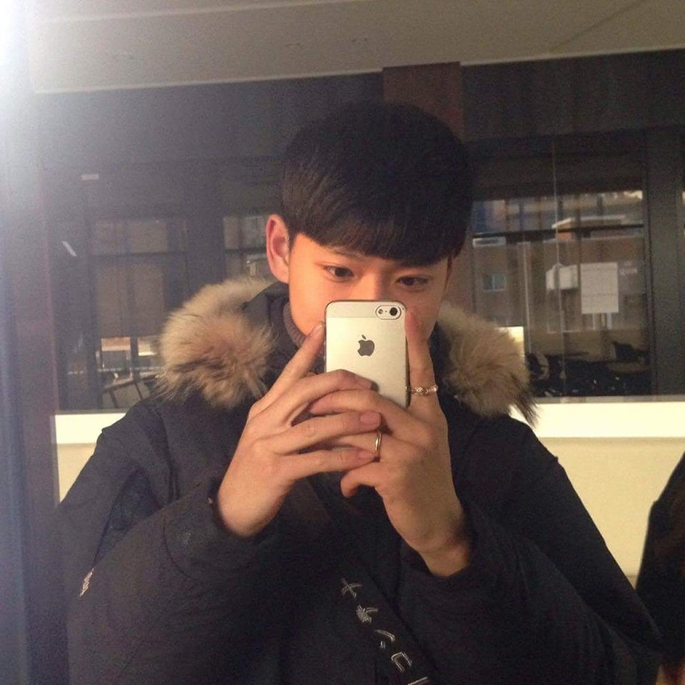
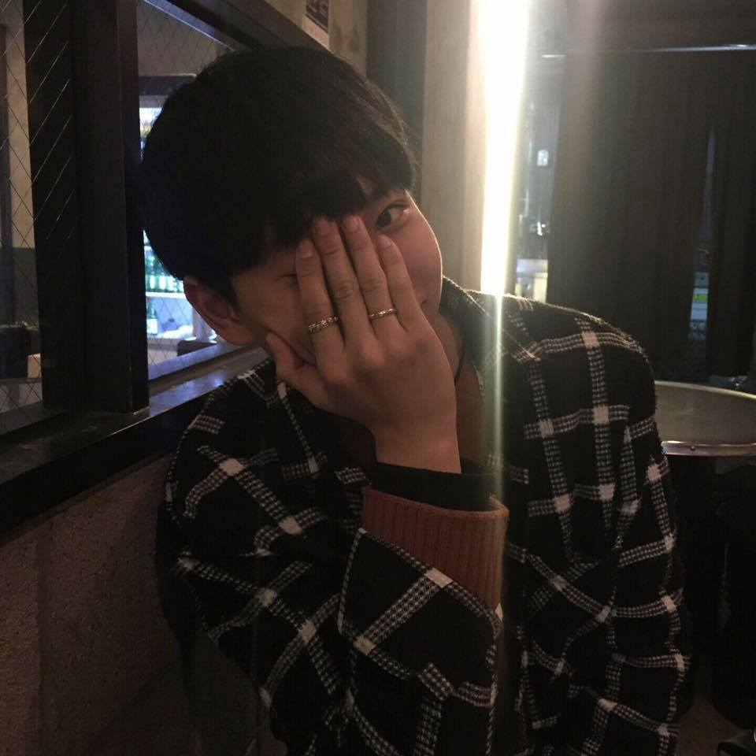
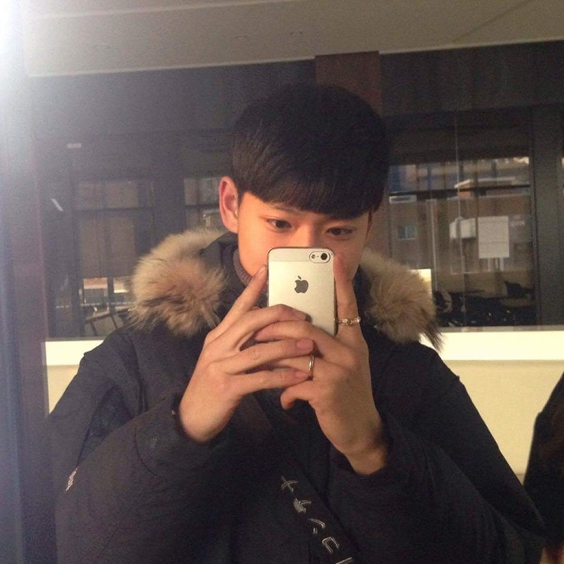
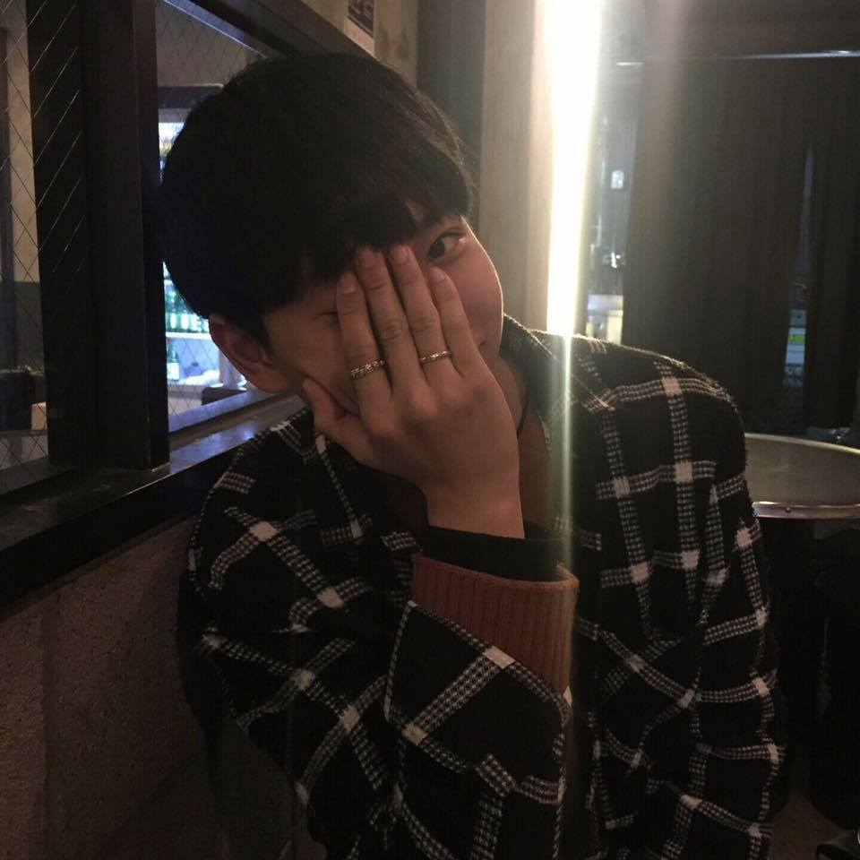
Drinking more than 500,000won monthly
I am known to be a big drinker and clublover in the Software convergence College.
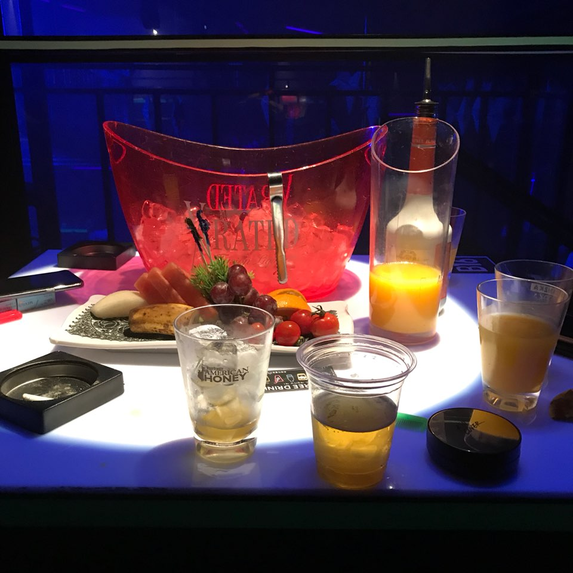 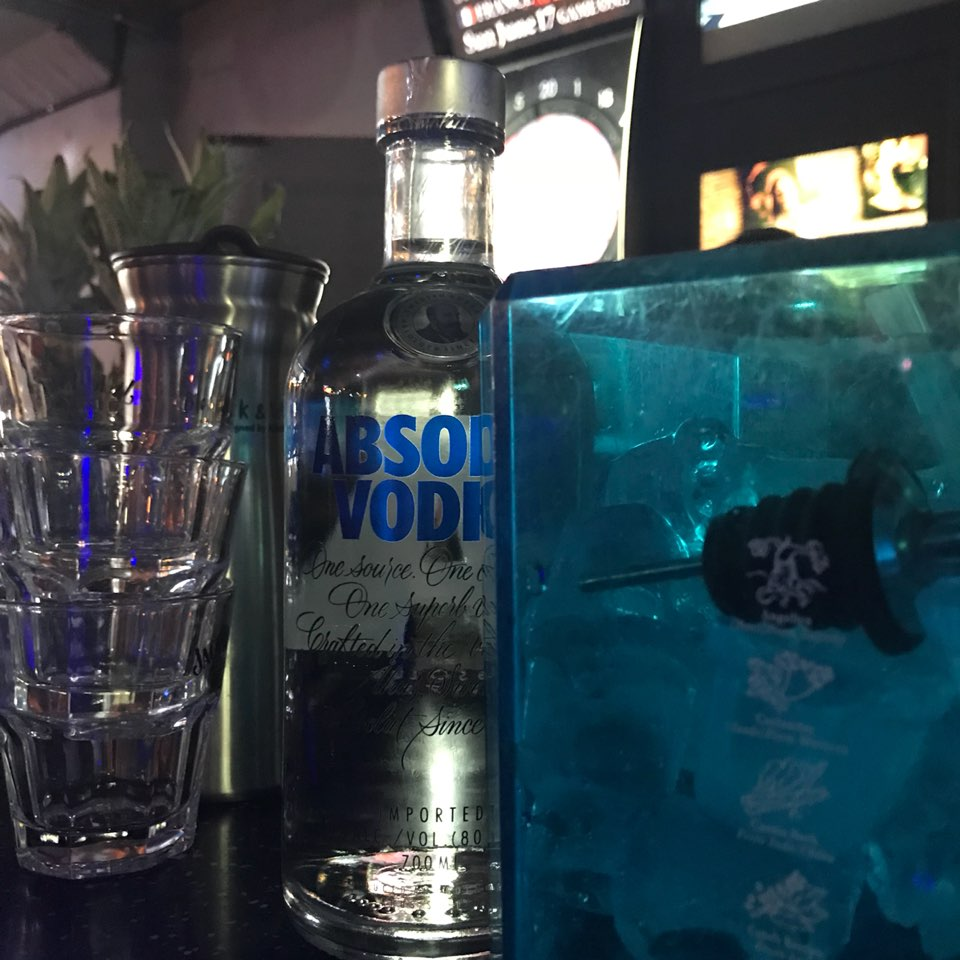
 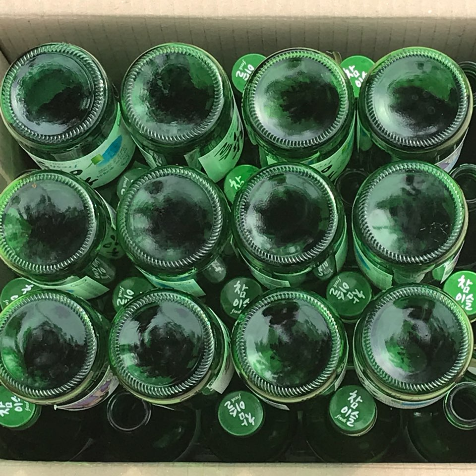
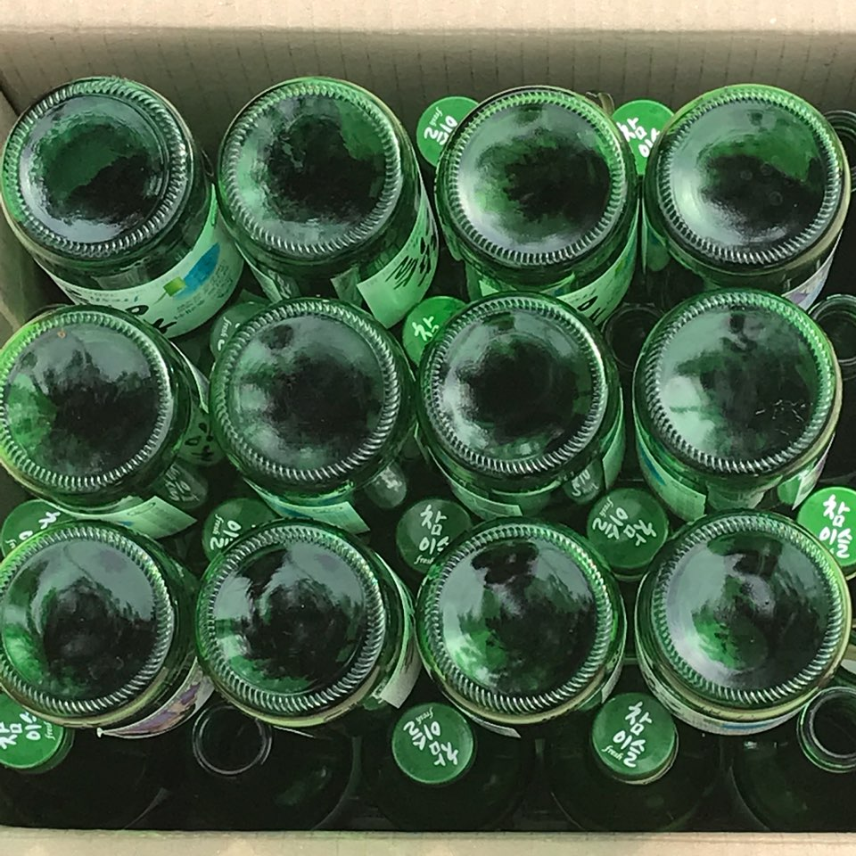
Achieve The CGV Rvip
I am a movie mania who likes to watch 10 movies a month, at least 2 movies, and watch movies alone in front of my house.
Click me! (CGV PAGE)
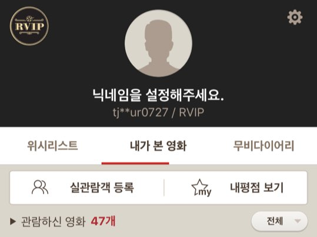
The places I have been to
How many of the following places do I travel with girl friends? ^^
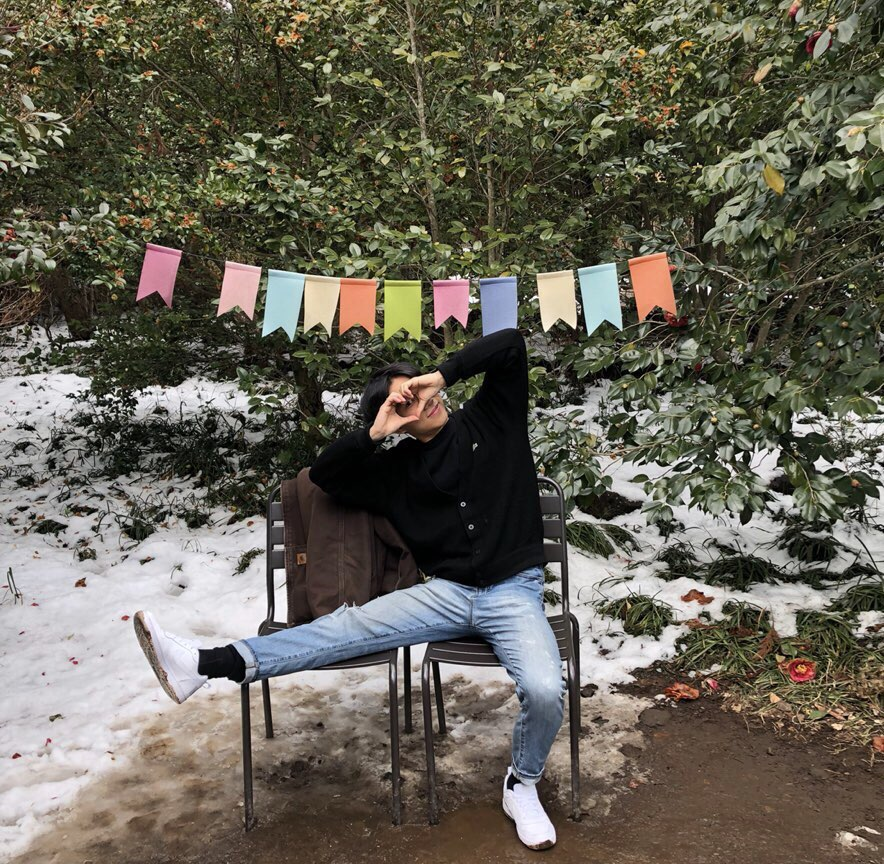 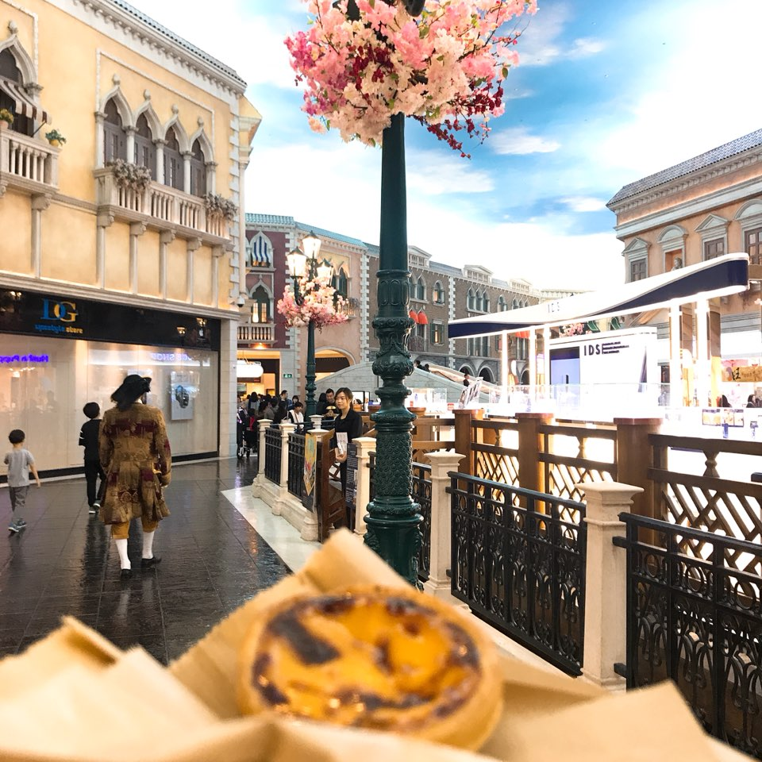 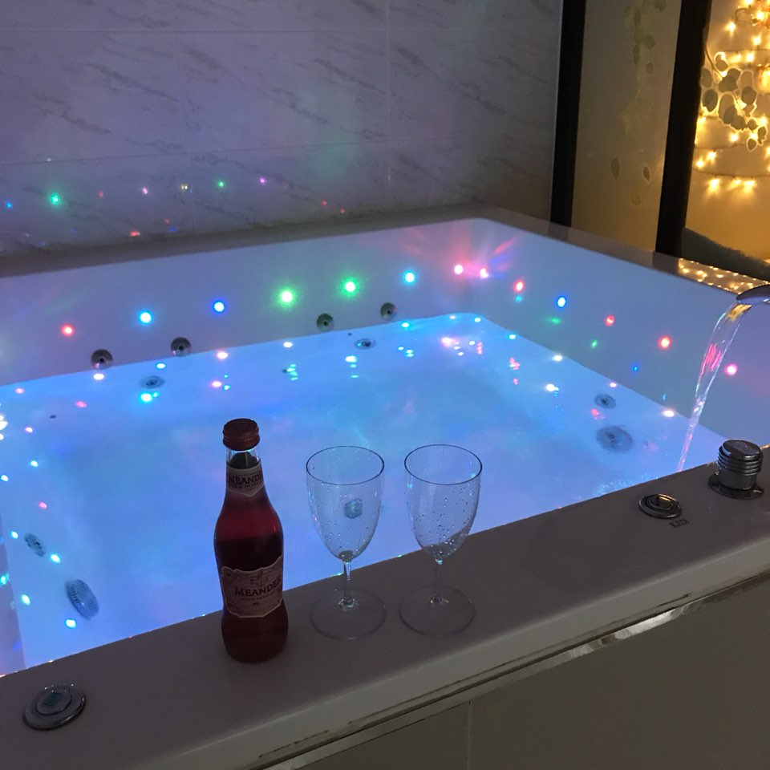